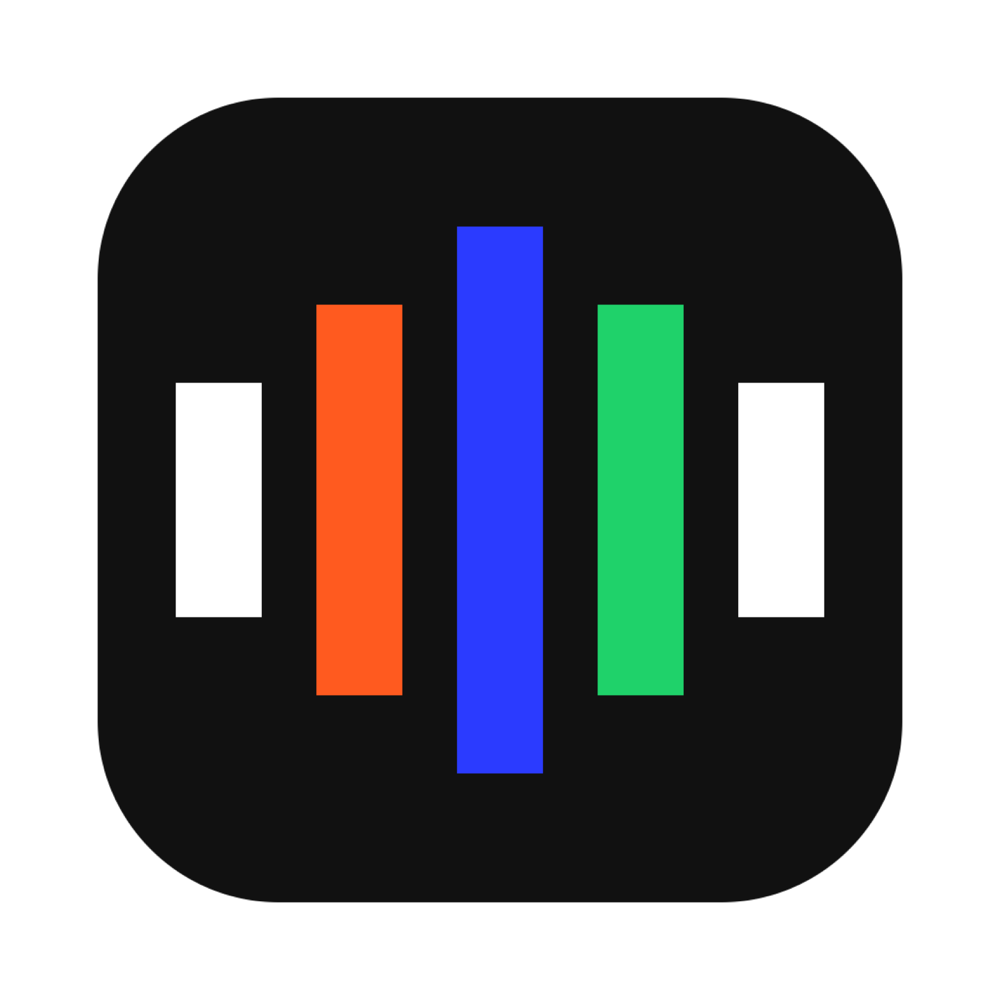
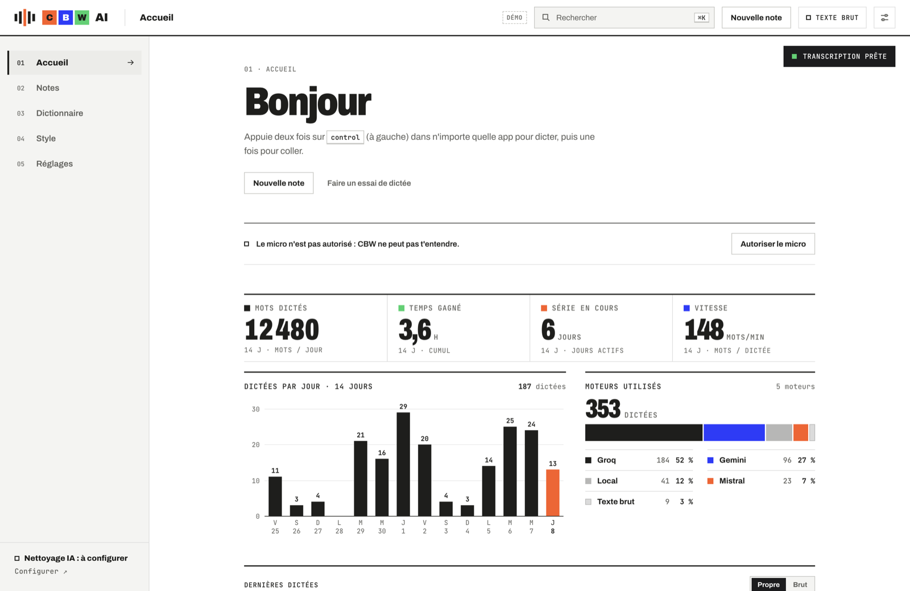
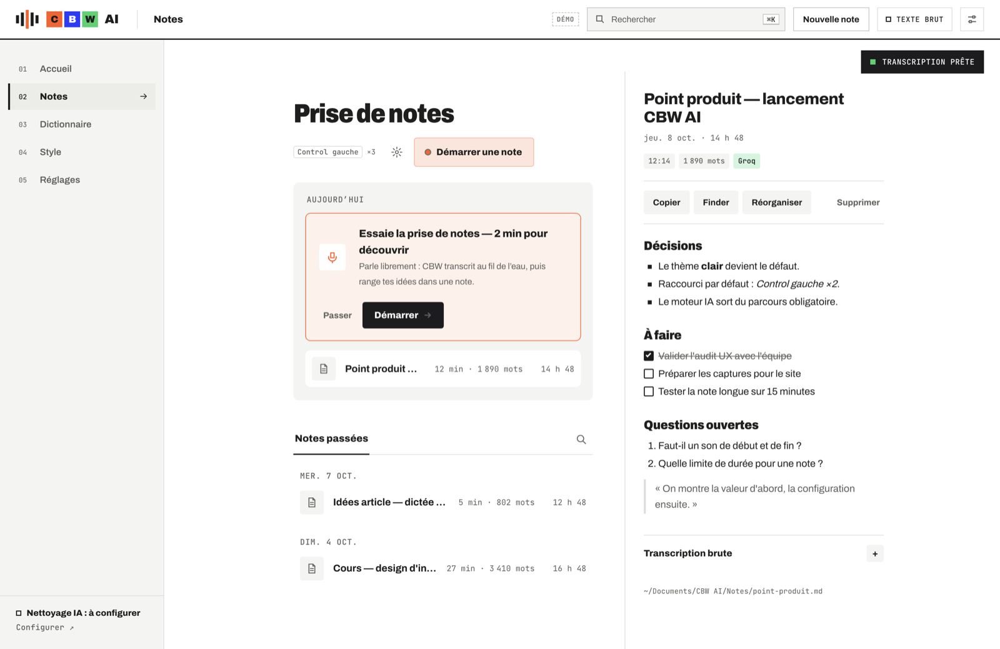
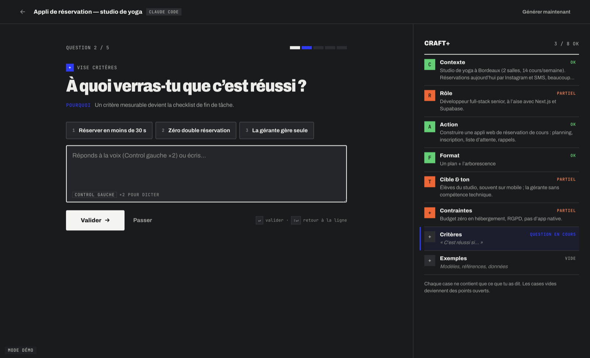
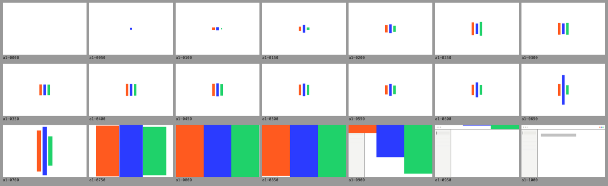
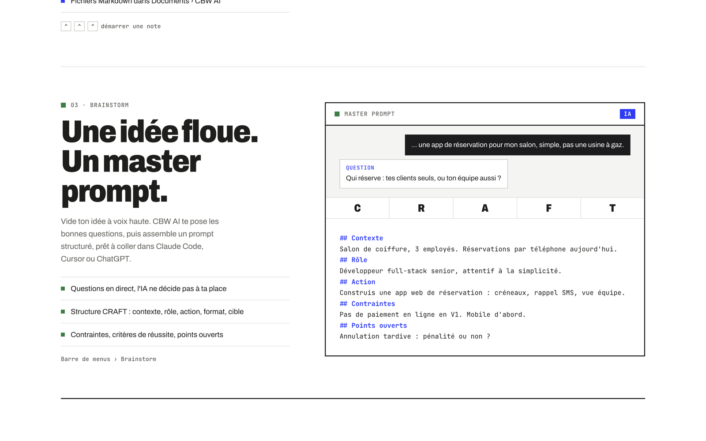
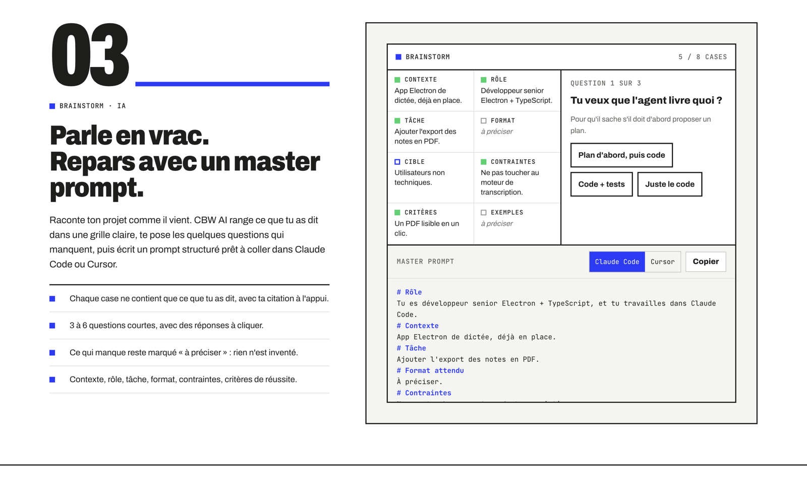
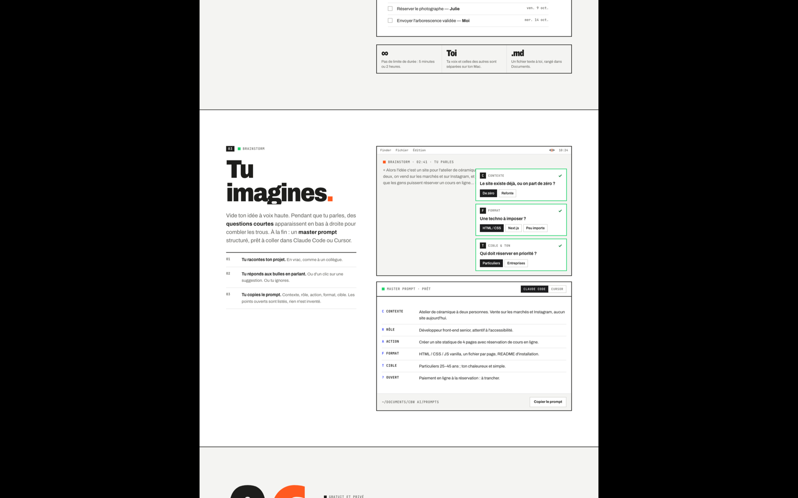

CBW AIUne app macOS gratuite qui transcrit ta voix sur ton Mac, nettoie le texte avec une IA gratuite et le colle là où tu écris. Elle prend aussi des comptes rendus de réunion complets et transforme un brainstorm parlé en master prompt pour Claude Code ou Cursor.
CBW AI vit dans le Dock et la barre de menus. Une pastille discrète reste en bas de chaque écran : au survol, elle propose Dicter, Note et Brainstorm.
Chaque mode a sa couleur, comme dans l'app : orange pour la dictée, vert pour les notes, bleu pour le brainstorm et l'IA.



Repris de ton site d'automatisations : blanc, encre adoucie, angles droits, filets fins, et trois couleurs qui ont chacune un sens.
Titres condensés très gras, étiquettes en mono capitales.
Écoute, traitement IA, collé. Le reste en blanc et graphite.
Logo calé sous les boutons macOS, menu ⌘\ qui passe en colonne d'icônes.
Micro-animations de 0,12 à 0,24 s, coupées si macOS demande moins d'animations.
Sombre « graphite » au choix, sans flash au lancement.
Bienvenue, autorisations, essai, prêt. Un seul bouton principal par écran.

Inspirés de 15 sites étudiés (Wispr Flow, Superwhisper, Granola, Raycast…). Tous affichent sous le bouton : Gratuit · macOS 14+ · Apple Silicon · 117 Mo.

Titre géant et la vraie pastille animée : ÉCOUTE, MISE AU PROPRE, COLLÉ. Le plus court et le plus clair, proche de Raycast et Linear.
Ouvrir le site 1 →
Avant/après cliquable, gros chiffres, un chapitre par fonction avec son mini-écran. Le plus fidèle à ta marque.
Ouvrir le site 2 →
Le logo parle, puis trois scènes : Tu parles, Tu réunis, Tu imagines. Le plus spectaculaire, mais le plus long.
Ouvrir le site 3 →Le site 2 porte le mieux l'identité CBW Studio et montre chaque fonction concrètement. Il gagnerait le hero animé du site 1, qui fait comprendre l'app en 5 secondes, et les bulles du site 3 pour le brainstorm. On garde une page courte et un seul bouton principal.
Ce qui reste à faire, et les décisions qui sont de ton côté.